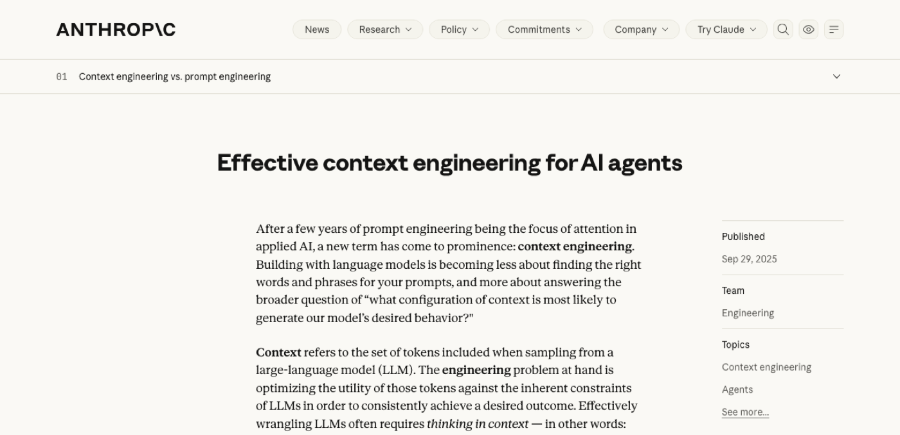
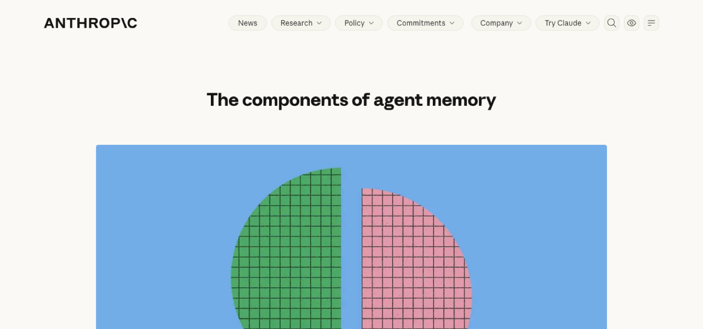

Week 3: Context is the interface
Before class
- Watch 3.1 Context engineering: what goes in the window, 3.2 RAG and why retrieval fails and 3.3 Memory and skills. The quiz at the start of class has five questions on them.
- Read Anthropic, Effective context engineering for AI agents (September 2025), and Google, Context Engineering: Sessions and Memory, the Day 3 whitepaper on the Kaggle page. Read the first for the phrase it uses for what belongs in the window.
- Bring the data pack from your proposal in a form the lab can read: the documents your agent must answer from, with the source of each. Leave out anything your team may not use.
Tonight
| 5:30 | Quiz on the videos, then one team's trace of the week, then the four ideas below, with the room. |
| 6:10 | Lab 3, Context. Two paths, one output sheet. |
| 7:50 | Break. |
| 8:05 | Studio. The knowledge slice and the retrieval report. I sit with two teams at a time. |
| 9:15 | Synthesis, and what to do before week 4. |
What the model sees on a turn
Everything the model knows about your task on a given turn is whatever is in its context window at that moment. Nothing else exists for it unless the harness put it there. That makes the window the interface between your service and the model, and a well-designed harness treats it as a budget.
Here is a typical turn, by tokens. The system prompt and instructions are usually small. Tool schemas take more room than people expect, and they are sent on every call. Retrieved documents, if you use retrieval, are often the biggest block. Then the conversation so far, which grows every turn. Then the latest tool result, which can be anything from one line to a whole web page.
All of it competes for the same window, and the window is not just a limit on length. Models get measurably worse at using what is in the window as it fills up, a pattern researchers call context rot. Irrelevant documents make the relevant passage harder to find.
Anthropic's engineering piece from September 2025 puts it this way. Prompt engineering was about choosing the words of one instruction. Context engineering is about choosing everything the model sees on a turn, instructions, tools, documents, history, results, and keeping that set as small as the task allows. Their phrase is the smallest set of high-signal tokens.

Ask the room: for the agent you built in Lab 2, what was in the window on its longest turn, and which block do you think was largest?
Four moves the harness makes
There are four moves, and you will use all of them in Lab 3. The first two reduce what goes into the window. The other two replace what is there with something smaller.
| Move | What the harness does | In practice |
|---|---|---|
| Select | Give each step only the tools it needs. | The drafting step does not carry the schemas of the lookup tools. |
| Trim | Cut a tool result to what the next decision needs. Retrieve passages rather than files. | A search tool returns titles and snippets rather than entire pages. |
| Compact | Summarize old turns and drop the originals. | Forty turns become one summary of what was decided and what is still open. |
| Notes | Let the agent write down what matters in a file and read it back later. | A sub-task can likewise run in a fresh context, with only its result coming back. |
Anthropic's harness for long-running agents, from week 1, leaned hardest on the last two: each session starts in a fresh context and reads back a progress file the previous session left behind.
The bill follows the window. For most agents input tokens are most of the cost, and the input is the context. When a team charts its longest trace by block, the savings usually turn up in tool schemas and in tool results nobody trimmed.
Retrieval, and the four places it fails
Your agent will need facts that are not in the model: your team's documents, policies, product data. Retrieval, usually called RAG, retrieval-augmented generation, is how they get into the context. It is also where many agents quietly go wrong, because a retrieval miss looks like a fluent answer.
Here is the pipeline. Before anyone asks a question, you take the documents, split them into chunks, turn each chunk into an embedding, a list of numbers that captures its meaning, and store those in an index. At question time you embed the question the same way, find the k chunks whose embeddings are closest, and put those chunks into the context. The model answers from them, ideally citing which chunk each claim came from.
| Fails at | What happened | What usually fixes it |
|---|---|---|
| Chunking | The answer was split across two chunks and neither one makes sense alone. | Chunk by the document's structure, so a section, a table, or a question and its answer stay together. |
| Retrieval | The right chunk exists, but it was not in the top k. | Filter on metadata such as product or date. Combine keyword search with embeddings. Rerank the top twenty to pick the top five. |
| Reading | The right chunk was in the context, and the model ignored it or misread it. | Fewer, cleaner chunks in the window, and a citation on every claim, which makes a misread visible. |
| Refusing | Nothing relevant was retrieved, and the model answered anyway. | Decide what counts as nothing relevant and give the agent a fixed response for it. |
The most useful habit is to measure retrieval on its own, before you look at the answers. Write test questions. For each one, mark which chunks actually contain the answer. Then compute recall@k: the share of questions for which at least one of those chunks is in the top k results. Ten questions will get you started. Fifty is better. If recall@k is 60 percent, no prompt will make the answers more than 60 percent right.
Only then look at the answers, and check three things: whether the model used the retrieved text, whether every claim has a citation whose chunk actually supports it, and whether the model said it could not answer when nothing relevant came back. That last behavior is the one you have to design for. Models do not refuse by default. The right answer to a question the corpus cannot answer is: I cannot find that. Combine keyword search with embeddings (hybrid search), because product codes, names and error numbers are keywords and embeddings are bad at them. And keep the source and the location with every chunk, so a citation can point to a page a person can open.
Ask the room: think of a question your users will ask that your corpus cannot answer. What should the agent say, and what should it do next?
Memory is retrieval, and skills are files
Two topics answer the same question: what does the agent know that is not in this turn's context? Memory is what it keeps between runs. Skills are instructions it loads when a task calls for them.
| Kind | What it holds | Where it lives |
|---|---|---|
| Session memory | Everything in this run: the goal, the history, the tool results. | In the context window. It ends with the run, unless the harness compacts it or writes it down. |
| Long-term memory | Facts: this customer prefers email, these three items are still open. Procedures: what worked last time, kept as instructions. | Outside the model, in a file or a database. Retrieved into the context when relevant. |
Long-term memory comes back into the window by retrieval, so everything above about failure applies to it. Anthropic's piece on the components of agent memory (November 2026) marks it as an engineering topic now. The division of labor to remember: the agent decides what is worth writing down, and the harness decides where it goes, who can read it, and when it comes back into the context. Every remembered item is a cost, tokens on every later turn in which it appears.

Four failures to design against. Stale: the fact was true in March and the agent still acts on it. Wrong scope: one user's preference applied to another user, a privacy incident. Poisoned: an instruction that arrived inside a document got saved as a fact and now returns on every run. Unexplained: nobody can see why the agent believes it. The remedies are the same in every case: timestamps, scope by user and team, a store a person can read, and a way to delete.
A skill is a folder: a file of instructions, plus optional scripts and reference material. The agent sees a short description of each up front and loads the full instructions into the context when the task matches. Anthropic introduced the format in October 2025. Expertise becomes a file your team can review, version and test. The system prompt stays short. And a skill does not require programming, so the product owner or the domain expert on your team can write one. Write one for your agent's job and test it on three tasks.
Ask the room: name one thing your agent would be tempted to remember that it must never store. Who is harmed if it does, and how would you find out?
Trace of the week
One team opens the evening with one trace: what the agent did, step by step, and what it taught them. Ten minutes, the actual trace, never slides about it. This week the room looks at the context rather than the actions: how many tokens went in on each turn and which block grew, whether an instruction the model ignored was buried in the middle of a long history, and whether a tool result brought in text that the model then treated as an instruction. That last one is the seed of week 5.
Lab 3: Context
Goal: build retrieval over your team's own corpus, prove with ten questions that it finds the right passage, and make the agent say so when it cannot. Starter files are posted on iCollege before class. Each team hands in one output sheet at 7:50. Sponsor teams whose corpus is PDF, Word or Excel, or whose sponsor wants a vector database, take the documents and vector database segments in the studio, with a version filter, a tenant-isolation test and an embedding-model swap in the starters.
Code path
- Start from the RAG add-on in CIS 4394, week 7, which the starter extends. Chunk your corpus two ways, by a fixed number of characters and by the document's structure, embed the chunks, and build an index for each.
- Add a search tool that returns the top k passages with the source and location of each, and instruct the agent to cite the passage behind every claim.
- Write ten questions and, for each, the passage that answers it. Make one a question the corpus cannot answer.
- Run the ten against both indexes. Compute recall@k for each chunking setting, and for every miss write down the stage: chunking, retrieval, reading or refusing.
- Make the agent decline when nothing relevant comes back: decide what counts as nothing relevant, write the response, run the unanswerable question, and keep the trace.
No-code path
- In Fleet, load your corpus as a knowledge source and instruct the agent to cite the passage behind every claim.
- Write the same ten questions, with the passage that answers each, and ask them one at a time.
- Open each run in the trace view. Record which retrieved passage the answer used and whether the citation was right. The share of questions whose answering passage was retrieved is your recall@k.
- For every miss, write down the stage. Rewrite the two worst questions and ask again, and note what changed.
- Set the agent's behavior when retrieval returns nothing: the instruction and the fixed response. Ask the unanswerable question and keep the trace.
Output sheet, one page per team:
- The ten questions, the passage that answers each, and recall@k, for both chunking settings on the code path.
- Two failures, each with the stage where it failed.
- The decline behavior, shown in one trace.
- A memory design in five lines: what is kept per session, what is kept across sessions, and what is never stored.
Studio: the knowledge slice and retrieval report
The knowledge slice is your agent answering from your corpus, with citations. It is due before week 4, with a one-page retrieval report under six headings.
- The corpus: what it is, how large it is, and what is excluded.
- The chunking and retrieval settings: how chunks are cut, the value of k, keyword plus embeddings or embeddings alone, and any metadata filters.
- The ten-question check, with recall@k.
- The citation format: what a citation looks like, and where it points.
- The decline behavior: what the agent says when nothing relevant comes back, with the trace that shows it.
- The memory design: what is kept per session, what is kept across sessions and with what scope, how it is deleted, and what is never stored.
Write the corpus heading first. Without it, no reader can judge the recall@k under heading three. When I sit with your team I will ask what is in the window on a typical turn and how big it is, which question failed and at which stage, and what the agent does when it cannot answer.
Synthesis
- The context window is the interface: on any turn the model knows only what is in it. Four moves keep it small: select, trim, compact, notes.
- Retrieval fails at four stages, chunking, retrieval, reading and refusing. recall@k on ten questions tells you which stage is failing.
- A citation that points to a page a person can open, and a decline when nothing relevant comes back, are designed behaviors. Models do not refuse by default.
- Session memory ends with the run. Long-term memory is retrieval with a longer life: timestamps, scope, a readable store, a way to delete. Skills put expertise in a file your team can review.
Before week 4: watch videos 4.1 to 4.3 and read Anthropic, Demystifying evals for AI agents, and Yao et al., τ-bench. Submit the knowledge slice and the retrieval report. Next week we measure: golden sets, pass^k, error analysis, and a judge calibrated against human labels.
Sources
- Anthropic, Effective context engineering for AI agents, September 29, 2025.
- Google, Context Engineering: Sessions and Memory, Day 3 whitepaper, Kaggle, 2025.
- Anthropic, Effective harnesses for long-running agents, November 26, 2025.
- Anthropic, The components of agent memory, November 6, 2026.
- Anthropic, Equipping agents for the real world with Agent Skills, October 2025.
- CIS 4394 Agentic AI, Week 7: Memory, RAG and Knowledge, Fall 2026.
- LangChain, LangSmith Fleet documentation.
- Anthropic, Demystifying evals for AI agents, January 9, 2026.
- Yao et al., τ-bench: A Benchmark for Tool-Agent-User Interaction in Real-World Domains, June 2024.